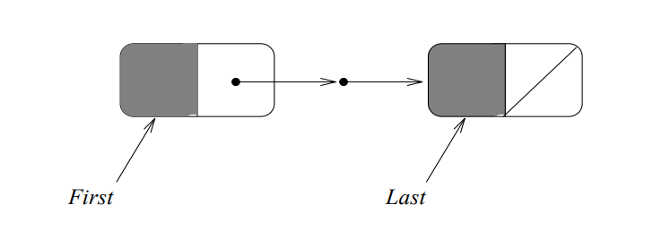
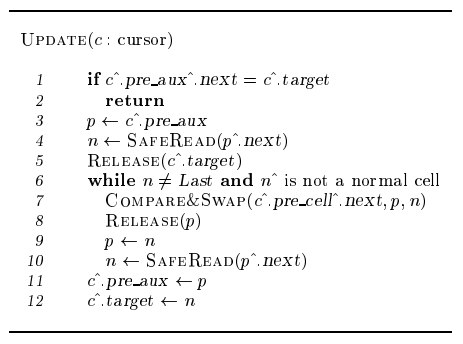
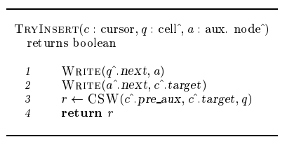
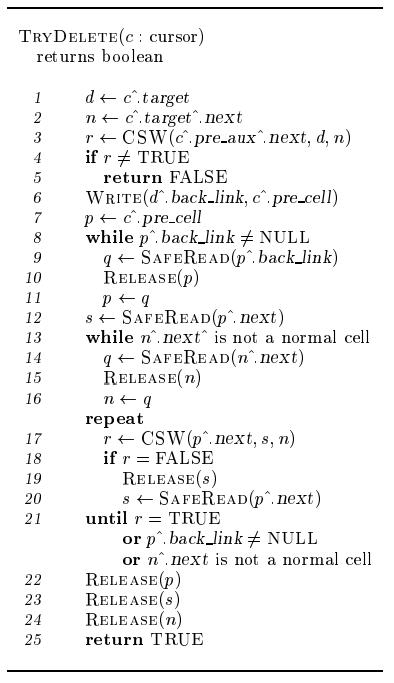

简介
本篇论文阐述了使用CAS实现无锁链表。在该论文发表之前，mutex互斥技术已经被广泛使用，spin locking的使用让mutex的效率进一步提升。然而mutex将会引入critical section，section内执行的代码很容易成为性能瓶颈或者造成优先级反转之类的问题。
Lock-free数据结构理论上效率更高，但当时lock-free数据结构的overhead过重，因此性能相比mutex反而更差。该论文第一次使用CAS实现了链表结构，并探讨了如何解决链表node回收等问题。
目的
对于一个lock-free链表来说，插入一个node的过程非常直观：只需要新建一个node，将node插入指定位置即可。然而当删除一个node时，有一些情况会比较麻烦，例如node被删除时仍被其它线程访问，或者在被删除的node后插入新的node等。
Lock-free Linked List
基础数据结构
该论文设计的链表含有三种node，分别是：
- Normal node：存储实际数据的node。
- Auxiliary node：用于辅助增删操作的node。
- Dummy node：链表的第一个和最后一个node，不存储实际数据。
当链表尚未存数据时，链表内已经含有三个节点，第一个node和最后一个node为dummy node，中间还存有一个auxiliary node，如下图所示。

基本运算
论文先介绍了几种lock-free程序中常用的几种函数。First函数返回链表的第一个dummy node，Last返回最后一个dummy node，Next返回Cursor指向的下一个node。
Update
Update移除多余的auxiliary node，如下图所示。

Insert
Insert直接在Cursor指向的node初插入即可。

Delete
Delete使用back link记录删除node的前一个node，并随后遍历并删除back link指向的node。

Memory Management
本文还讨论了如何解决ABA问题，和管理空闲node。ABA问题采用计数方法解决，而空闲node回收则略微复杂一些。当分配一个node时，将从free list中申请，而当收回一个node时，则将该node放回free list中。

总结
本篇论文属于lock-free领域经典论文之一，虽然它给出的实现和现在常见实现差别较大，但它增删链表node的思想仍有启发意义。